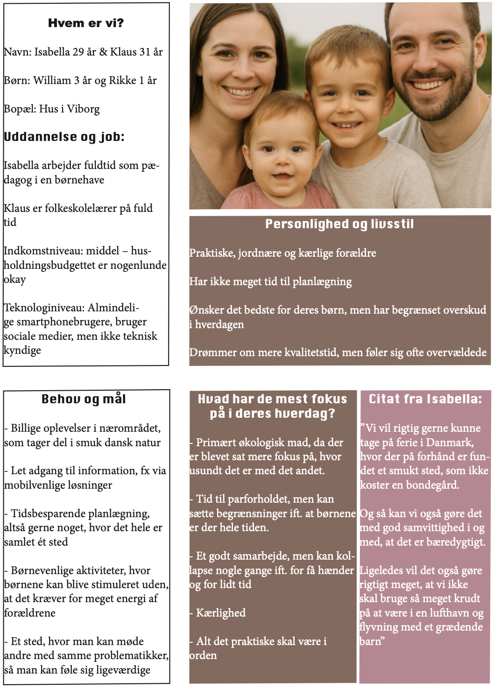
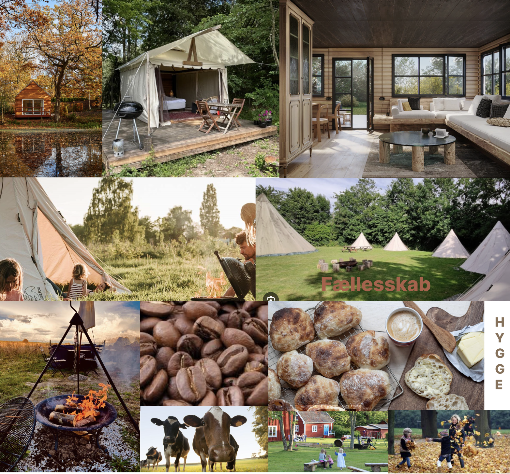
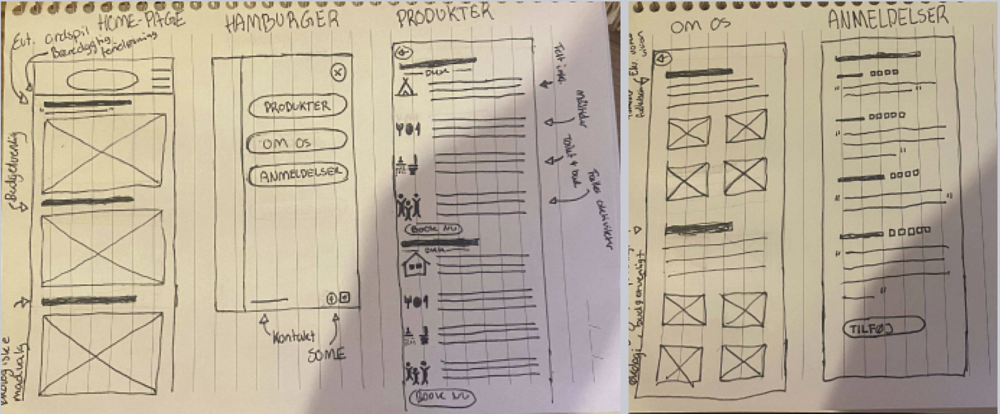
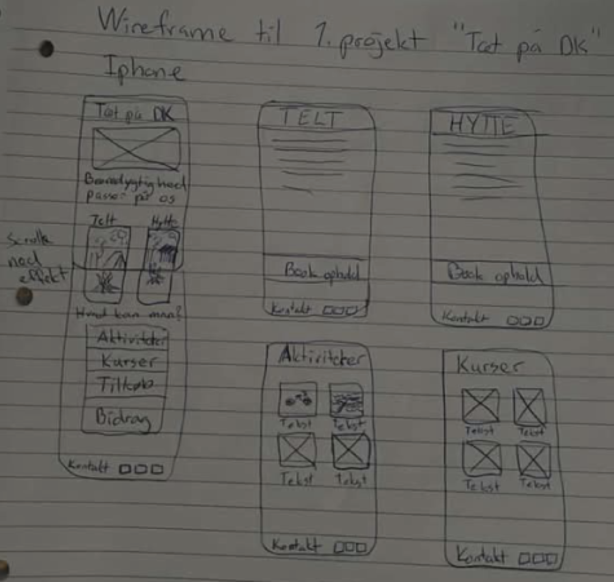
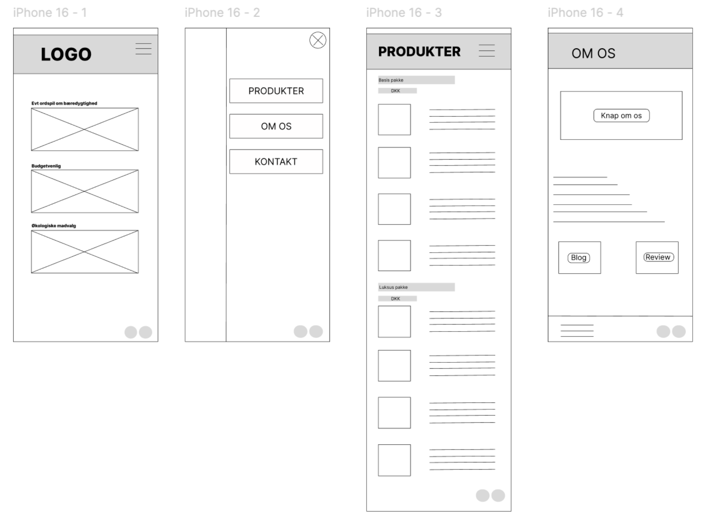
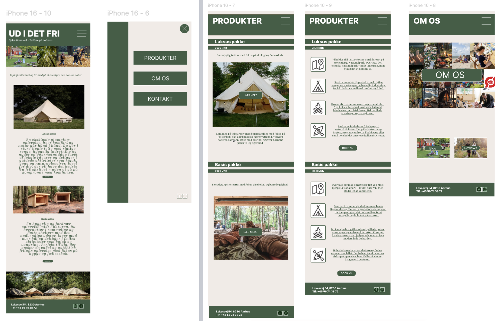

A prototype for staycations in Denmark
An interactive mobile prototype for Udidetfri.dk, a startup showcasing experiences and staycation opportunities in Denmark.
PROJECT
The goal was to design an interactive mobile prototype that presents staycation experiences in Denmark in a simple, intuitive and inspiring way.
TARGET GROUP
The primary target group is young families aged 25–35 with an interest in sustainability, community and eco-friendly living. They are digitally experienced and comfortable using both mobile and desktop platforms. Many face time and budget constraints, which is making local and affordable staycation options more attractive.
RESEARCH
To support a user-centered design process, a persona was developed based on qualitative insights from surveys and a KWHL analysis. This provided a clear understanding of the users' values, motivations and challenges. The persona guided the design process to ensure the solution meets both functional needs (usability and accessibility) and emotional needs (security, community and sustainability). A picture of it below.

The design process focused on creating a clean and intuitive user experience. It began with desk research and inspiration, followed by a moodboard to establish a visual direction based on calm, natural tones and a sense of simplicity.
MOODBOARD
SKETCHES AND WIREFRAMES
Sketches and wireframes were then developed to structure the layout and ensure a logical user flow.



The final solution is an interactive mobile prototype that presents staycation experiences in a simple and inspiring way. The design focuses on a clean layout, soft colors and clear navigation to create a calm and user-friendly experience.
The platform allows users to easily explore different types of stays, such as cabins and nature-based accommodations, while highlighting sustainability and local experiences.
PROTOTYPE


WHAT DID I LEARN
This project strengthened my skills in user-centered design, visual identity, and creating intuitive digital experiences.